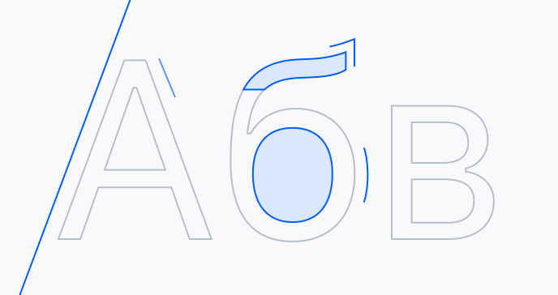
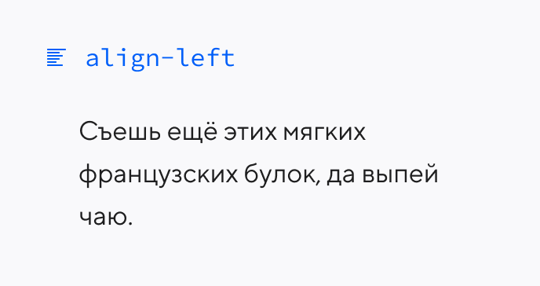
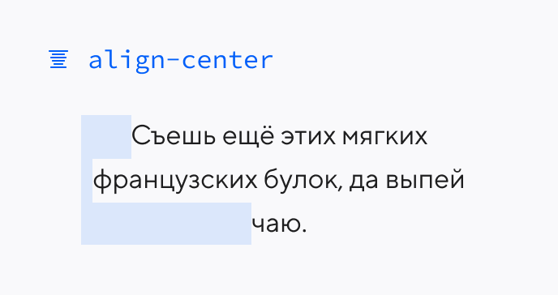
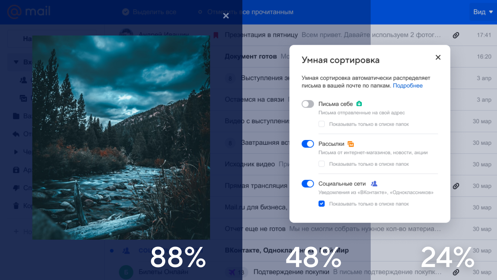
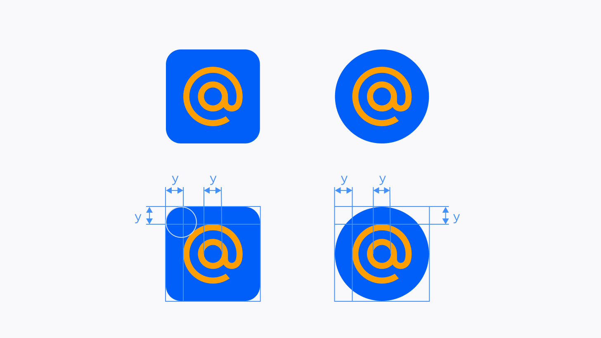

Создание десятков продуктов в одной экосистеме невозможно без дизайн-системы. Здесь можно подробнее почитать про наши гайдлайны и техническую реализацию.
Дизайн-система
Paradigm 2.0Визуальный язык
Paradigm 2.0Логотипы продуктов
Paradigm 2.0Брендбук
Paradigm 2.0Компоненты в коде
Paradigm 2.0Работа с текстом
Исследуем наши продукты
Сейчас в нашей лаборатории более 20 исследователей, которые работают над десятками продуктов. Вы можете почитать больше про наши исследования в блоге.
Узнать больше
Собираем лучшую команду
Для нас дизайн – это в первую очередь люди. Именно люди принимают решения, определяют ценности и культуру. Мы верим, что работа должна приносить удовольствие, стремимся создать все условия для этого и быть открытыми к новому.
Наши вакансии
ВакансияДизайнер продукта в МарусюПодробнее
ВакансияДизайнер продукта в ПочтуПодробнее
ВакансияДизайнер продукта в МессенджерыПодробнее
Основа визуального языка
Визуальный язык – это способ коммуникации бренда в интерфейсе наших продуктов.
Мы стремимся, чтобы приёмы визуального языка использовались сознательно, создавали дополнительную ценность, поддерживали прямую ассоциацию с брендом Mail.ru и не мешали использованию продукта.
Paradigm — это дизайн-система продуктов Mail.ru, которая помогает нам поддерживать целостность их пользовательского опыта и оптимизировать ресурсы дизайна и разработки.
Мы используем одинаковую структуру интерфейса внутри групп продуктивити и медиа. Для построения размерностей в интерфейсе мы используем сетку 4dp. Единый модуль сетки необходим для поддержания общей логики в создании макетов и их разработке.
Информационные слои
Элементы интерфейса имеют разное назначение или находятся на разных уровнях смысловой иерархии. Мы разделяем их на информационные слои. Информационные слои плоские, но имеют глубину относительно друг друга. Это позволяет быстрее разобраться в иерархии и функциях элементов интерфейса.
Воздух в структуре макета
Воздух помогает считать информациюИнтерфейс слишком зажатСтруктура интерфейса хорошо считывается благодаря воздухуКолонки слипаются, из-за чего рушится иерархия лэйаута
Разделители в структуре макета
Иерархия элементов поддерживается благодаря воздухуРазделители усложняют восприятие спискаФорма хорошо структурированаРазделители без необходимости увеличивают высотуСтруктура интерфейса хорошо считывается благодаря воздухуРазделители не помогают ориентироваться в интефрейсе, а только делают его «зажатым»Структура интерфейса хорошо считывается благодаря воздухуБез разделителей элементы списка разваливаются, и сканирование списка писем усложняется
Адаптивность
В зависимости от типа продукта мы используем два подхода к адаптивности. Используем в продуктах со сложным визуальным представлением, где важно гарантировать аккуратность, например, в Медиапроектах. Медиапроекты используют сетку с модулем 20dp. По краям экрана заложен минимальный отступ 20dp, а также пространство под полосу прокрутки 20dp.
100% экрана
Используем в продуктах, где важно использовать всё экранное пространство: например, в Почте, Облаке, Календаре. Для этого типа лейаута мы рекомендуем использовать структурную сетку, чтобы поддерживать ритм и стандартный модуль в 4dp для определения размерностей.
Комбинирование адаптивности
По необходимости можно комбинировать разные подходы к адаптивности.
Размерности
У каждого проекта есть несколько типов сеток, к которым привязаны изменения в контролах и стилях типографики.û
Mail Sans
Mail Sans — фирменный шрифт и ключевой элемент брендинга наших продуктов. В интерфейсах мы рекомендуем использовать его в заголовках, промоэлементах и навигации.
Дополнительные шрифты
Дополнительный акцидентный шрифт медиапроектов для интерфейсов. Также используется для акциденции в коммуникации группы компаний Mail.ru.
Helvetica Neue
Это переработанный шрифт с более структурно унифицированным набором высоты и ширины. Другие изменения включают улучшенную читаемость, более толстые знаки препинания и увеличенный интервал между цифрами.
Arial
Иногда продаваемый или отображаемый в программном обеспечении как Arial MT, представляет собой шрифт без засечек и набор компьютерных шрифтов в нео-гротескном стиле. Шрифты из семейства Arial поставляются со всеми версиями Microsoft Windows, начиная с Windows 3.1 и выше, некоторыми другими программными приложениями Microsoft.
San Francisco

Шрифт San Francisco имеет три основных варианта: SF для macOS, iOS и iPadOS; SF Compact для watchOS; и SF Mono для приложений Terminal, Console и Xcode. Существует несколько других вариантов для внутреннего использования Apple.
Inter
Это шрифт, специально разработанный для пользовательских интерфейсов с акцентом на высокую четкость текста малого и среднего размера на экранах компьютеров. Семейство имеет высокую высоту x, чтобы облегчить чтение текста в смешанном и нижнем регистре.
Mail Sans + Inter
Заголовок — Mail Sans в начертании Medium или Demibold. Наборный шрифт — Inter в начертании Regular. Эта шрифтовая пара подходит для любой платформы.
Mail Sans + Native Font
Заголовок — Mail Sans в начертании Demibold. Наборный шрифт — системный: Arial для Windows, Helvetica Neue для Mac, San Francisco для iOS, Roboto для Android.
Выравнивание по горизотнтали

Левая выключка лучше всего подходит для чтения текста узких экранахПравая выключка плохо подходит для чтения текста большого объема

Допустимо для небольших объемов текста и заголовковВыключка по ширине усложняет чтение короткого текста
Регистры
Капс не мешает читаемости интерфейса в маленьком форматеНе рекомендуется использовать капс в заголовках
Палитра бренда помогает в узнаваемости продуктов Mail.ru. Она сохраняет преемственность в приёмах визуального языка и ассоциирует продукт с брендом компании.
Базовая палитра
Базовую палитру используют для акцентов, управляющих элементов, состояний интерфейсов и заливки фонов. Она состоит из акцентных цветов и палитры нейтрального серого. Убедитесь, что коэффициент контрастности текста не ниже 3.0. Чем крупнее кегль текста, тем ниже коэффициент контрастности. Исключение — логотипы или декоративные элементы и неактивные контролы.
Палитра серого
Разница между нейтральным серым и тонированным проявляется в сочетании с другими цветами, хотя при первом взгляде не так заметна. Мы не рекомендуем использовать цвета с высоким параметром saturation в базовой палитре серых оттенков. Используйте специально подобранные оттенки из нашей библиотеки.
Использование в дизайне
Дизайн-токены интегрированы в наши библиотеки компонентов и UI-киты. Они охватывают разные платформы, цветовые темы, состояния компонентов и многое другое. Название цветов и типографики в наших библиотеках в Figma соответствуют названию токена в репозитории. Это упрощает разработку: например, если изменить цвет в репозитории, он изменится в разных продуктах.
Тематизация
Разные продукты используют свои темы оформления. Любая тема наследуется от базовой, но меняет значения некоторых переменных. Например, есть отдельные темы для продуктов productivity и media, но все они основаны на базовой теме. Такой подход помог в разработке темной темы интерфейса. Токены темной темы тонируют цветовые токены базовой темы.û
Стиль иконок
Залитые пиктограммы используются в вебе, где необходимо поддерживать корректный рендер на разных мониторах.Линейные пиктограммы используются на мобильных устройствах, где разрешение экранов выше.
Углы иконок
По аналогии с нашим логотипом мы используем и мягкие, и острые скругления в форме пиктограмм и иконок.
Баланс иконок
Иконки визуально сбалансированы, поэтому можно располагать несколько пиктограмм рядом друг с другом.
Размер и цвет
В нашей дизайн-системе все иконки для веб-версий сервисов отрисованы в размере 16 px. Они привязаны к пикселям и оптимизированы для этого размера.Иконки Paradigm одноцветны. В иконках, как и в остальных местах интерфейса, мы используем цвета из дизайн-токенов, которые синхронизированы с библиотекой в Figma.
Использование текста с иконками
Используйте иконки вместе с текстомИконка без подписи может быть непонятной
Неизменный стиль иконки
Залитые иконки смотрятся аккуратно и гармоничноИзмененные иконки смотрятся неопрятно
Целенаправленное использование
Старайтесь не использовать иконки для украшения — это отвлекает от основного действияУчитывайте окружающий контекст: когда иконки слишком близко расположены, они создают визуальный шум и путают
Иллюстративные иконки
В зависимости от композиции и задачи коммуникации иконки могут быть как плоскими или аутлайновыми, так и иллюстративными.
Плоские иконки
Если иконки плоские, следует ориентироваться на правила из гайдлайна по иконографике. Допустимо комбинирование стилей, если в коммуникации это выглядит целостно.û
Тень
Тень — самый простой способ показать визуальную иерархию. Один слой «приподнимается» над другим, что показывает их взаимоотношение и иерархию компонентов.

Когда нужно сфокусировать внимание на одном интерфейсном блоке, используется затемнение. Есть три прозрачности для тонирования. Выбор прозрачности зависит от того, насколько нагружен интерфейс поверх затемнения.
Градиент для затемнения
Затемнение картинки не усложняет интерфейсДополнительная граница заливки усложняет интерфейс
Цвет градиента для затеменения
Рекомендуем создавать градиент не из оттенков чисто черного, а из холодного черного — #00060F.
Строение градиента
Линейный градиент имеет характерные заломы. Поэтому рекомендуем использовать сглаженные градиенты — это сделает эффект более приятным на вид. В переходах между цветами тоже есть такой эффект, поэтому рекомендуем сглаживать градиенты.
Тонирование
Тонирование элемента это стандартный приём фидбэка, а в качестве тонера мы используем цвет. У простых контролов вроде инпута также меняется цвет обводки.
Масштаб
Когда элемент используется не только для клика, но и является интерактивным элементом, рекомендуем использовать более явную визуальную отдачу.û
Бренд
Бренд — это цифровая личность наших продуктов. Мы соблюдаем его константы — логотип и палитру — и свободно работаем с визуальным языком в коммуникациях, рекламных кампаниях и спецпроектах.
Фирменные цвета
Основной фирменный цвет Mail.ru — электрический синий. Наравне с ним в продуктах используется белый цвет. Дополнительный цвет — фирменный оранжевый.
Построение логотипа
Для соблюдения интервала между шрифтовой частью логотипа и знаком Mail.ru используется единица измерения i. Значение i соответствует ширине вертикального штриха в букве m. Логотип Mail.ru можно использовать на фирменной плашке или без неё. Основной единицей построения фирменной плашки является х, равный 1/4 ширины знака Mail.ru..
Охранное поле логотипа
Запрещено располагать элементы графики на охранном поле. Также охранное поле показывает минимально разрешенное расстояние расположения логотипа от края макета. Минимальное значение охранного поля логотипа должно равняться h. h является основой построения охранного поля логотипа и равно высоте знака Mail.ru.
Охранное поле логотипа на плашке
Запрещено располагать на охранном поле элементы графики. Также охранное поле показывает минимально разрешенное расстояние расположения логотипа от края макета. Минимальное значение охранного поля логотипа должно равняться 2z. z является основой построения охранного поля логотипа и равно отступу от края плашки до знака Mail.ru.
Использование знака

Знак может располагаться только на квадратной или круглой фирменной плашке. Когда знак используется без шрифтового написания, он всегда должен быть на подложке. Это правило распространяется как на мобильные и десктопные приложения, так и на веб-сервисы. Размер отступа внутри плашки зависит от диаметра внутреннего круга знака и равняется y.
Совместное использование с другими логотипами
При использовании логотипа Mail.ru рядом с другими логотипами необходимо соблюдать интервал равный 1,5h. Значение h равно ширине знака Mail.ru. Размер отступа внутри плашки зависит от диаметра внутреннего круга знака и равняется y.